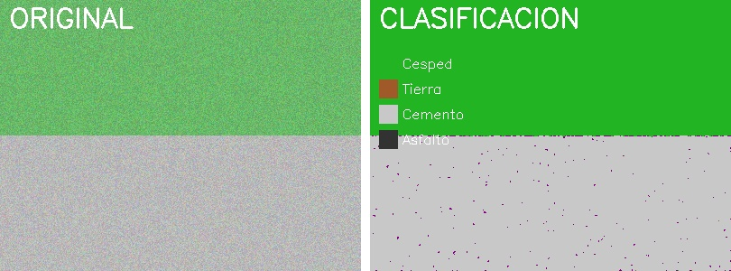
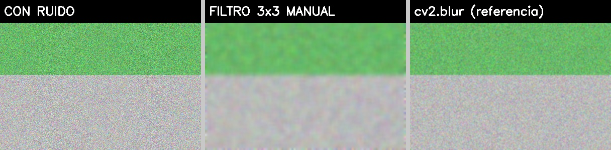

Universidad Mayor de San Andrés · Informática
Jonathan Gutierrez Condori · 2026
Sistema de trámites universitarios UMSA. El formulario carga sus campos desde un archivo JSON de flujo de procesos.
Geometría procedural generada con Three.js. Arrastra para rotar, scroll para hacer zoom.
Nube de puntos 3D generada a partir de 74 fotogramas extraídos del video del objeto.
Algoritmos implementados a nivel de píxel: clasificación de texturas y filtro de suavizado 3×3.
Cada píxel se analiza en espacio HSV. La varianza local en una ventana 5×5 calcula la rugosidad de la superficie. Se clasifica en 4 categorías:

Para cada píxel (excluyendo bordes), se calcula el promedio aritmético de los 9 píxeles en la ventana 3×3. Reduce el ruido gaussiano sin usar funciones de OpenCV.
| 1/9 | 1/9 | 1/9 |
| 1/9 | 1/9 | 1/9 |
| 1/9 | 1/9 | 1/9 |
